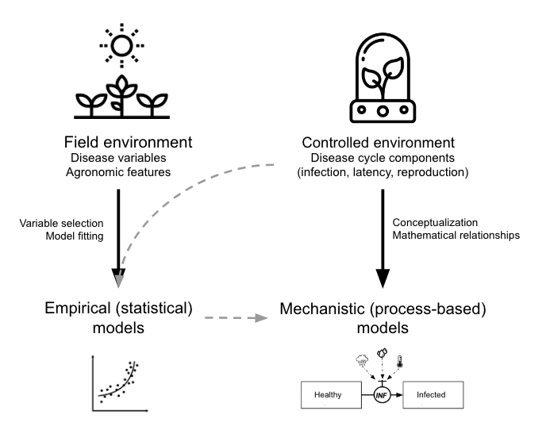
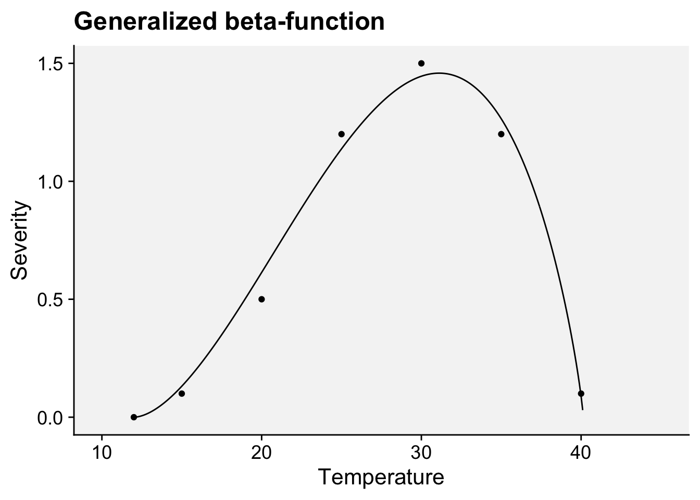
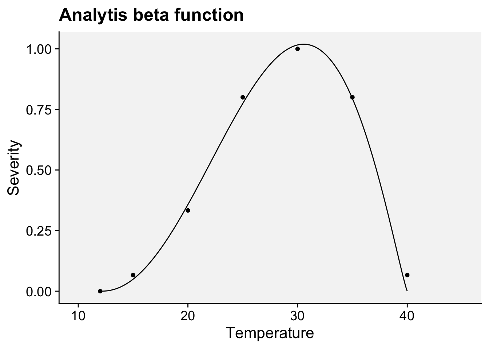
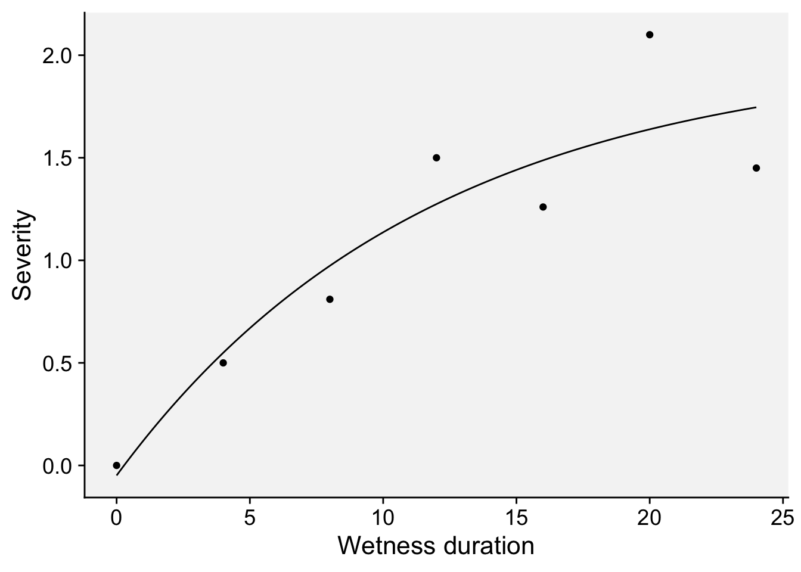
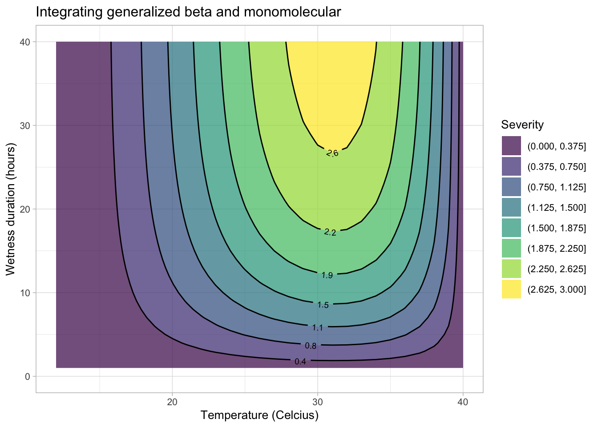
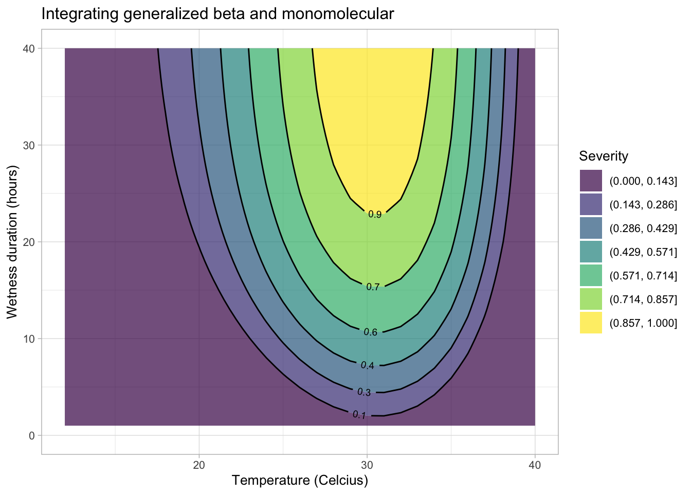
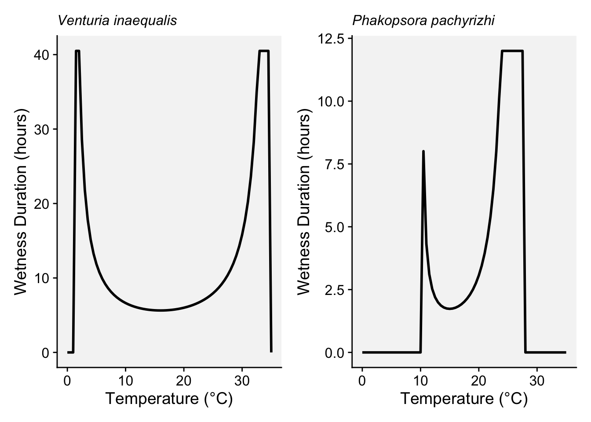

temp <- tibble::tribble(
~t, ~y,
12.0, 0.00,
15.0, 0.1,
20.0, 0.5,
25.0, 1.2,
30.0, 1.5,
35.0, 1.2,
40.0, 0.1
)20 Disease modeling
20.1 Introduction
As seen in the previous chapter, plant disease modeling is a crucial tool for predicting disease dynamics and informing management decisions when integrated into decision support systems. By leveraging models, researchers and practitioners can anticipate disease outbreaks, assess potential risks, and implement timely interventions to mitigate losses (Rossi et al. 2010; Savary et al. 2018).
Mathematical modeling involves representing empirical phenomena and experimental outcomes using mathematical functions. The data used for these models may be collected specifically for modeling purposes or drawn from existing experiments and observations originally conducted to address different research questions, with such data often found in the literature (Hau and Kranz 1990).
Mathematical models integrating plant, disease, and environmental - in most cases weather-based variables - factors have been developed since the mid-1900s (See recent review by González-Domínguez et al. (2023) ). Dynamic modeling of disease epidemics gained traction in the early 1960s with foundational work by Vanderplank and Zadoks, setting the stage for future advancements. Since then, researchers have contributed extensively to model development, mainly focusing on the plant disease cycle which outline pathogen development stages, such as dormancy, reproduction, dispersal, and pathogenesis, driven by interactions among host, pathogen, and environmental factors (De Wolf and Isard 2007).
A systematic map by Fedele et al. (2022) identified over 750 papers on plant disease models, primarily aimed at understanding system interactions (n = 680). This map revealed that while most models focus on system understanding, fewer are devoted to tactical management (n = 40), strategic planning (n = 38), or scenario analysis (n = 9).
In terms of model development, we can classify the models into two main groups based on the approach taken (González-Domínguez et al. 2023): Empirical or mechanistic approaches, which differ fundamentally in their basis, complexity and application (Figure 20.1).

Empirical models, which emerged in the mid-20th century, rely on data-driven statistical relationships between variables collected under varying field or controlled environments. These models often lack cause-effect understanding, making them less robust and requiring rigorous validation and calibration when applied in diverse environments, especially in regions that did not provide data for model construction. The parameters of the model change every time new data are incorporated during model development.
In contrast, mechanistic models, developed from a deep understanding of biological and epidemiological processes, explain disease dynamics based on known system behaviors in response to external variables—a concept-driven approach. These dynamic models quantitatively characterize the state of the pathosystem over time, offering generally more robust predictions by utilizing mathematical equations to describe how epidemics evolve under varying environmental conditions.
Both empirical and mechanistic approaches are valid methodologies extensively used in plant pathology research. The choice between these approaches depends on several factors, including data availability, urgency in model development, and, frequently, the researcher’s experience or preference. Empirical models focus on statistical relationships derived directly from data, whereas mechanistic models aim to represent the biological processes of disease progression through linked mathematical equations.
In mechanistic modeling, the equations used to predict specific disease components—such as infection frequency or the latency period—are often empirically derived from controlled experiments. For example, an infection frequency equation is typically based on data collected under specific environmental conditions, with models fitted to accurately describe observed patterns. These process-based models are then built by integrating empirically-derived equations or rules, which collectively simulate the disease cycle. Data and equations are sourced from published studies or generated from new experiments conducted by researchers.
Beyond their practical predictive value, mechanistic models are valuable tools for organizing existing knowledge about a particular disease, helping to identify gaps and guide future research efforts. An example of such work is the extensive collection of comprehensive mechanistic models developed for various plant diseases by the research group led by Prof. Vittorio Rossi in Italy (Rossi et al. 2008, 2014; Salotti et al. 2022; Salotti and Rossi 2023).
This chapter focuses mainly on empirical modeling. We begin by examining the types of data utilized in model development, focusing on those collected under controlled conditions, such as replicated laboratory or growth chamber experiments, as well as field data collected from several locations and years. We will also analyze real-world case studies, drawing on examples from the literature to replicate and understand model applications. Through these examples, we aim to illustrate the process of fitting models to data and underscore the role of modeling in advancing plant disease management practices.
20.2 Controlled environment
In this section, we will demonstrate, using examples from the literature, how statistical models can be fitted to data that represent various stages of the disease cycle.
Research on disease-environment interactions under controlled conditions - such as laboratory or growth chamber studies - lays the groundwork for building foundational models, including infection-based models and sub-models for specific processes like dormancy, dispersal, infection, and latency (De Wolf and Isard 2007; Krause and Massie 1975; Magarey et al. 2005).
Growth chambers and phytotrons are essential for testing the effects of individual variables, though these controlled results may not fully replicate field conditions. Anyway, laboratory experiments help clarify specific questions by isolating interactions, unlike complex field trials where host, pathogen, and environment factors interact. Polycyclic or “mini epidemic” experiments enable observation of disease dynamics under targeted conditions (Hau and Kranz 1990; Rotem 1988).
Once developed, these sub-models can be incorporated into larger mechanistic models that simulate the entire disease cycle, thereby mimicking disease progression over time (Rossi et al. 2008; Salotti and Rossi 2023). Alternatively, sub-models can also be used in stand-alone predictive systems where the process being modeled - such as infection - is the key factor in determining disease occurrence (MacHardy 1989; Magarey and Sutton 2007). For example, infection sub-models can be integrated into prediction systems that help schedule crop protection measures by forecasting when infection risk is highest.
20.2.1 Infection-based models
To model infection potential based on environmental factors, simple rules can be used with daily weather data, such as temperature and rainfall thresholds (Magarey et al. 2002). Simple decision aids, such as charts and graphs, also exist to help model infection potential by using combinations of daily average temperature and hours of wetness. These tools offer a straightforward approach to evaluate infection risks based on readily available weather data, supporting decision-making without complex modeling (Seem 1984). However, for many pathogens, hourly data is needed, requiring complex models that track favorable conditions hour by hour. These models start with specific triggers and can reset due to conditions like dryness or low humidity, simulating a biological clock for infection risk assessment (Magarey and Sutton 2007).
Modeling approaches vary based on available data and model goals. A common method is the matrix approach, like the Wallin potato late blight model, which uses rows for temperature and columns for moisture duration to estimate disease severity (Krause and Massie 1975) (see previous chapter on warning systems). Bailey enhanced this with an interactive matrix that combines temperature, relative humidity, and duration to assess infection risk across pathogens, making it versatile for various modeling needs (Bailey 1999).
When infection responses are measured at various temperature and wetness combinations, regression models can be developed to predict infection rates. These models often use polynomial, logistic, or complex three-dimensional response surface equations to represent the relationship between environmental conditions and infection potential. In an excellent review title “How to create and deploy infection models for plant pathogens” Magarey and Sutton (2007) discusses that many modeling approaches lack biological foundations and are not generic, making them unsuitable for developing a unified set of disease forecast models. While three-dimensional response surfaces, such as those created with sufficient temperature-moisture observations, offer detailed infection responses, they are often too complex and data-intensive for widespread use (seeTable 1 adapted from Magarey and Sutton (2007)).
| Approach | Strengths | Weaknesses |
|---|---|---|
| Matrix (Krause and Massie 1975; Mills 1944; Windels et al. 1998) | Easy; converts moisture/temperature combinations into severity values or risk categories. Tried and true approach. | Data to populate matrix may not be readily available. |
| Regression: – Polynomial (Evans 1992) – Logistic (Bulger 1987) |
Widely used in plant pathology. Available for many economically important pathogens. | Parameters not biologically based. Requires dataset for development. |
| Three-dimensional response surface (Duthie 1997) | Describes infection response in detail. | Parameters not biologically based. Complex, requires extensive data and processing time. |
| Degree wet hours (Pfender 2003) | Simple; based on degree hours, commonly used in entomology. Requires only Tmin and Tmax | Recently developed; assumes linear thermal response. |
| Temperature-moisture response function (Magarey et al. 2005) | Simple; based on crop modeling functions, requires only Tmin, Topt and Tmax | Recently developed. |
In the following sections, I will demonstrate how various biologically meaningful models fit infection data, using temperature, wetness duration, or a combination of both as predictors.
20.2.1.1 Temperature effects
20.2.1.1.1 Generalized beta-function
Among several non-linear models that can be fitted to infection responses to temperature, the generalized beta-function is an interesting alternative (Hau and Kranz 1990). This is a nonlinear model with five parameters. Two of them, namely \(b\) and \(c\) , have a biological meaning because they are estimates of the minimum and maximum temperature of the biological process under consideration.
We will use a subset of the data obtained from a study conducted under controlled conditions that aimed to assess the influence of temperature on the symptom development of citrus canker in sweet orange (Dalla Pria et al. 2006). The data used here is only for severity on the cultivar Hamlin (plot a in Figure 20.2). The data was extracted using the R package {digitize} as shown here on this tweet.

Let’s enter the data manually. Where \(t\) is the temperature and \(y\) is the severity on leaves.
Fit the generalized beta-function (Hau and Kranz 1990). The model can be written as:
\[ y = a*((t - b )^d)*((c - t)^e) \]
where \(b\) and \(c\) represent minimum and maximum temperatures, respectively, for the development of the disease, \(a\), \(d\) and \(e\) are parameters to be estimated, \(t\) is the temperature and \(y\) is disease severity. We need the {minpack.lm} library to avoid parameterization issues.
library(tidyverse)
library(minpack.lm)
fit_temp <- nlsLM(
y ~ a * ((t - b) ^ d) * ((c - t) ^ e),
start = list(
a = 0,
b = 10,
c = 40,
d = 1.5,
e = 1
),
algorithm = "port",
data = temp
)
summary(fit_temp)
Formula: y ~ a * ((t - b)^d) * ((c - t)^e)
Parameters:
Estimate Std. Error t value Pr(>|t|)
a 0.001303 0.006295 0.207 0.855
b 11.999999 4.875412 2.461 0.133
c 40.137236 0.346763 115.748 7.46e-05 ***
d 1.760101 1.193017 1.475 0.278
e 0.830868 0.445213 1.866 0.203
---
Signif. codes: 0 '***' 0.001 '**' 0.01 '*' 0.05 '.' 0.1 ' ' 1
Residual standard error: 0.1121 on 2 degrees of freedom
Algorithm "port", convergence message: Relative error between `par' and the solution is at most `ptol'.modelr::rsquare(fit_temp, temp)[1] 0.9898275Store the model parameters in objects.
fit_temp$m$getAllPars() a b c d e
0.00130259 11.99999936 40.13723602 1.76010097 0.83086798 a <- fit_temp$m$getAllPars()[1]
b <- fit_temp$m$getAllPars()[2]
c <- fit_temp$m$getAllPars()[3]
d <- fit_temp$m$getAllPars()[4]
e <- fit_temp$m$getAllPars()[5]Create a data frame for predictions at each temperature unit from 10 to 45 degree Celsius.
t <- seq(10, 45, 0.1)
y <- a * ((t - b) ^ d) * ((c - t) ^ e)
dat <- data.frame(t, y)Plot the observed and predicted data using {ggplot2} package.
library(ggplot2)
library(r4pde)
dat |>
ggplot(aes(t, y)) +
geom_line() +
geom_point(data = temp, aes(t, y)) +
theme_r4pde(font_size = 16) +
labs(x = "Temperature", y = "Severity",
title = "Generalized beta-function")
20.2.1.1.2 Analytis beta function
Ji et al. (2023) tested and compared various mathematical equations to describe the response of mycelial growth to temperature for several fungi associated with Grapevine trunk diseases. The authors found that the beta equation (Analytis 1977) provided the best fit and, therefore, was considered the most suitable for all fungi.
The model equation for re-scaled severity (0 to 1) as a function of temperature is given by:
\(Y = \left( a \cdot T_{eq}^b \cdot (1 - T_{eq}) \right)^c \quad ; \quad \text{if } Y > 1, \text{ then } Y = 1\)
where
\(T_{eq} = \frac{T - T_{\text{min}}}{T_{\text{max}} - T_{\text{min}}}\)
\(T\) is the temperature in degrees Celsius. \(T_{\text{min}}\) is the minimum temperature, \(T_{\text{max}}\) is the maximum temperature for severity. The \(a\) , \(b\) , and \(c\) are parameters that define the top, symmetry, and size of the unimodal curve.
Let’s rescale (0 to 1) the data on the citrus canker using the function rescale of the {scales} package.
library(scales)
Attaching package: 'scales'The following object is masked from 'package:purrr':
discardThe following object is masked from 'package:readr':
col_factortemp$yscaled <- rescale(temp$y)
temp# A tibble: 7 × 3
t y yscaled
<dbl> <dbl> <dbl>
1 12 0 0
2 15 0.1 0.0667
3 20 0.5 0.333
4 25 1.2 0.8
5 30 1.5 1
6 35 1.2 0.8
7 40 0.1 0.0667Now we can fit the model using the same nlsLM function.
# Define the minimum and maximum temperatures
Tmin <- 12
Tmax <- 40
library(minpack.lm)
fit_temp2 <- nlsLM(
yscaled ~ (a * ((t - Tmin) / (Tmax - Tmin))^b * (1 - ((t - Tmin) / (Tmax - Tmin))))^c,
data = temp,
start = list(a = 1, b = 2, c = 3), # Initial guesses for parameters
algorithm = "port"
)
summary(fit_temp2)
Formula: yscaled ~ (a * ((t - Tmin)/(Tmax - Tmin))^b * (1 - ((t - Tmin)/(Tmax -
Tmin))))^c
Parameters:
Estimate Std. Error t value Pr(>|t|)
a 6.7625 0.3218 21.013 3.03e-05 ***
b 1.9648 0.1030 19.072 4.45e-05 ***
c 1.1607 0.1507 7.701 0.00153 **
---
Signif. codes: 0 '***' 0.001 '**' 0.01 '*' 0.05 '.' 0.1 ' ' 1
Residual standard error: 0.03955 on 4 degrees of freedom
Algorithm "port", convergence message: Relative error in the sum of squares is at most `ftol'.modelr::rsquare(fit_temp2, temp)[1] 0.9948325Lets’s store the model parameters in objects.
fit_temp2$m$getAllPars() a b c
6.762509 1.964817 1.160702 a <- fit_temp2$m$getAllPars()[1]
b <- fit_temp2$m$getAllPars()[2]
c <- fit_temp2$m$getAllPars()[3]Again, we create a data frame for predictions at each temperature unit from 10 to 45 degree Celsius.
Tmin <- 12
Tmax <- 40
t <- seq(10, 45, 0.1)
y <- (a * ((t - Tmin) / (Tmax - Tmin))^b * (1 - ((t - Tmin) / (Tmax - Tmin))))^c
dat2 <- data.frame(t, y)And now we can plot the observed and predicted data using {ggplot2} package.
library(ggplot2)
library(r4pde)
dat2 |>
ggplot(aes(t, y)) +
geom_line() +
geom_point(data = temp, aes(t, yscaled)) +
theme_r4pde(font_size = 16) +
labs(x = "Temperature", y = "Scaled severity",
title = "Analytis beta function")
20.2.1.2 Moisture effects
20.2.1.2.1 Monomolecular function
For this example, we will use a subset of the data obtained from a study conducted under controlled conditions that aimed to assess the effects of moisture duration on the symptom development of citrus canker in sweet orange (Dalla Pria et al. 2006). As in the previous example for temperature effects, the data used here is only for severity on the cultivar Hamlin (plot a in Figure 20.3). The data was also extracted using the R package digitize.
Let’s look at the original data and the predictions by the model fitted in the paper.

For this pattern in the data, we will fit a three-parameter asymptotic regression model. These models describe a limited growth, where y approaches an horizontal asymptote as x tends to infinity. This equation is also known as Monomolecular Growth, Mitscherlich law or von Bertalanffy law. See this tutorial for comprehensive information about fitting several non-linear regression models in R.
Again, we enter the data manually. The 𝑥x is wetness duration in hours and 𝑦y is severity.
wet <- tibble::tribble(~ x, ~ y,
0 , 0,
4 , 0.50,
8 , 0.81,
12, 1.50,
16, 1.26,
20, 2.10,
24, 1.45)The model can be written as:
\(y = c1 + (d1-c1)*(1-exp(-x/e1))\)
where \(c\) is the lower limit (at \(x = 0\)), the parameter \(d\) is the upper limit and the parameter \(e\) (greater than 0) is determining the steepness of the increase as \(x\).
We will solve the model again using the nlsLM function. We should provide initial values for the three parameters.
fit_wet <- nlsLM(y ~ c1 + (d1 - c1) * (1 - exp(-x / e1)),
start = list(c1 = 0.5,
d1 = 3,
e1 = 1),
data = wet)
summary(fit_wet)
Formula: y ~ c1 + (d1 - c1) * (1 - exp(-x/e1))
Parameters:
Estimate Std. Error t value Pr(>|t|)
c1 -0.04898 0.31182 -0.157 0.8828
d1 2.00746 0.70594 2.844 0.0467 *
e1 11.63694 9.33184 1.247 0.2804
---
Signif. codes: 0 '***' 0.001 '**' 0.01 '*' 0.05 '.' 0.1 ' ' 1
Residual standard error: 0.3296 on 4 degrees of freedom
Number of iterations to convergence: 7
Achieved convergence tolerance: 1.49e-08modelr::rsquare(fit_wet, wet)[1] 0.8532282Store the value of the parameters in the respective object.
HW <- seq(0, 24, 0.1)
c1 <- fit_wet$m$getAllPars()[1]
d1 <- fit_wet$m$getAllPars()[2]
e1 <- fit_wet$m$getAllPars()[3]
y <- (c1 + (d1 - c1) * (1 - exp(-HW / e1)))
dat2 <- data.frame(HW, y)Now we can plot the predictions and the original data.
dat2 |>
ggplot(aes(HW, y)) +
geom_line() +
geom_point(data = wet, aes(x, y)) +
theme_r4pde(font_size = 16) +
labs(x = "Wetness duration", y = "Severity")
20.2.1.2.2 Weibull function
In the study by (Ji et al. 2021, 2023), a Weibull model was fitted to the re-scaled data (0 to 1) on the effect of moisture duration on spore germination or infection. Let’s keep working with the re-scaled data on the citrus canker.
The model is given by:
\(y = 1 - \exp(-(a \cdot x)^b)\)
where \(y\) is the response variable, \(x\) is the moist duration, \(a\) is the scale parameter influencing the rate of infection and \(b\) is the shape parameter affecting the curve’s shape and acceleration
wet$yscaled <- rescale(wet$y)
wet# A tibble: 7 × 3
x y yscaled
<dbl> <dbl> <dbl>
1 0 0 0
2 4 0.5 0.238
3 8 0.81 0.386
4 12 1.5 0.714
5 16 1.26 0.6
6 20 2.1 1
7 24 1.45 0.690fit_wet2 <- nlsLM(
yscaled ~ 1 - exp(-(a * x)^b),
data = wet,
start = list(a = 1, b = 2), # Initial guesses for parameters a and b
)
summary(fit_wet2)
Formula: yscaled ~ 1 - exp(-(a * x)^b)
Parameters:
Estimate Std. Error t value Pr(>|t|)
a 0.07684 0.01296 5.93 0.00195 **
b 1.07610 0.37103 2.90 0.03378 *
---
Signif. codes: 0 '***' 0.001 '**' 0.01 '*' 0.05 '.' 0.1 ' ' 1
Residual standard error: 0.1404 on 5 degrees of freedom
Number of iterations to convergence: 26
Achieved convergence tolerance: 1.49e-08modelr::rsquare(fit_wet2, wet)[1] 0.8534077Set the value of the parameters in the respective objects
x <- seq(0, 24, 0.1)
a <- fit_wet2$m$getAllPars()[1]
b <- fit_wet2$m$getAllPars()[2]
y <- 1 - exp(-(a * x)^b)
dat3 <- data.frame(x, y)dat3 |>
ggplot(aes(x, y)) +
geom_line() +
geom_point(data = wet, aes(x, yscaled)) +
theme_r4pde(font_size = 16) +
labs(x = "Wetness duration", y = "Scaled severity")
20.2.1.3 Integrating temperature and wetness effects
The equations developed for the separate effects can be integrated to create a surface response curve or a simple contour plot. Let’s first integrate the generalized beta and the monomolecular models for the original severity data for the citrus canker experiment.
First, we need a data frame for the interaction between temperature \(t\) and hours of wetness \(hw\). Then, we obtain the disease value for each combination of \(t\) and \(hw\).
t <- rep(1:40, 40)
hw <- rep(1:40, each = 40)
# let's fit the two models again and store the parameters in objects
# Temperature effects
fit_temp <- nlsLM(
y ~ a * ((t - b) ^ d) * ((c - t) ^ e),
start = list(
a = 0,
b = 10,
c = 40,
d = 1.5,
e = 1
),
algorithm = "port",
data = temp
)
fit_temp$m$getAllPars() a b c d e
0.00130259 11.99999936 40.13723602 1.76010097 0.83086798 a <- fit_temp$m$getAllPars()[1]
b <- fit_temp$m$getAllPars()[2]
c <- fit_temp$m$getAllPars()[3]
d <- fit_temp$m$getAllPars()[4]
e <- fit_temp$m$getAllPars()[5]
## Moist duration effects
fit_wet <- nlsLM(y ~ c1 + (d1 - c1) * (1 - exp(-x / e1)),
start = list(c1 = 0.5,
d1 = 3,
e1 = 1),
data = wet)
c1 <- fit_wet$m$getAllPars()[1]
d1 <- fit_wet$m$getAllPars()[2]
e1 <- fit_wet$m$getAllPars()[3]
dis <-
(a * (t - b) ^ d) * ((c - t) ^ e) * (c1 + (d1 - c1) * (1 - exp(- hw / e1)))
validation <- data.frame(t, hw, dis)Now the contour plot can be visualized using {ggplot2} and {geomtextpath} packages.
library(geomtextpath)
ggplot(validation, aes(t, hw, z = dis)) +
geom_contour_filled(bins = 8, alpha = 0.7) +
geom_textcontour(bins = 8,
size = 2.5,
padding = unit(0.05, "in")) +
theme_light(base_size = 10) +
theme(legend.position = "right") +
ylim(0, 40) +
labs(y = "Wetness duration (hours)",
fill = "Severity",
x = "Temperature (Celcius)",
title = "Integrating generalized beta and monomolecular")
In the second example, let’s integrate the Analytis beta and the Weibull model:
fit_temp2 <- nlsLM(
yscaled ~ (a * ((t - Tmin) / (Tmax - Tmin))^b * (1 - ((t - Tmin) / (Tmax - Tmin))))^c,
data = temp,
start = list(a = 1, b = 2, c = 3), # Initial guesses for parameters
algorithm = "port"
)
fit_temp2$m$getAllPars() a b c
6.762509 1.964817 1.160702 a2 <- fit_temp2$m$getAllPars()[1]
b2 <- fit_temp2$m$getAllPars()[2]
c2 <- fit_temp2$m$getAllPars()[3]
fit_wet2 <- nlsLM(
yscaled ~ 1 - exp(-(d * x)^e),
data = wet,
start = list(d = 1, e = 2), # Initial guesses for parameters a and b
)
d2 <- fit_wet2$m$getAllPars()[1]
e2 <- fit_wet2$m$getAllPars()[2]
Tmin <- 12
Tmax <- 40
dis2 <- (a2 * ((t - Tmin) / (Tmax - Tmin))^b2 * (1 - ((t - Tmin) / (Tmax - Tmin))))^c2 * 1 - exp(-(d2 * hw)^e2)
t <- rep(1:40, 40)
hw <- rep(1:40, each = 40)
validation2 <- data.frame(t, hw, dis2)
validation2 <- validation2 |>
filter(dis2 != "NaN") |>
mutate(dis2 = case_when(dis2 < 0 ~ 0,
TRUE ~ dis2))Now the plot.
ggplot(validation2, aes(t, hw, z = dis2)) +
geom_contour_filled(bins = 7, alpha = 0.7) +
geom_textcontour(bins = 7,
size = 2.5,
padding = unit(0.05, "in")) +
theme_light(base_size = 10) +
theme(legend.position = "right") +
ylim(0, 40) +
labs(y = "Wetness duration (hours)",
fill = "Severity",
x = "Temperature (Celcius)",
title = "Integrating generalized beta and monomolecular")
We can create a 3D surface plot to visualize the predictions, as it was used in the original paper. Note that In plot_ly, a 3D surface plot requires a matrix or grid format for the z values, with corresponding vectors for x and y values that define the axes. If the data frame (validation2) has three columns (t, hw, and dis2), we’ll need to convert dis2 into a matrix format that plot_ly can interpret for a surface plot.
{kind=link}
library(plotly)
library(reshape2)
z_matrix <- acast(validation2, hw ~ t, value.var = "dis2")
x_vals <- sort(unique(validation2$t))
y_vals <- sort(unique(validation2$hw))
plot_ly(x = ~x_vals, y = ~y_vals, z = ~z_matrix, type = "surface") |>
config(displayModeBar = FALSE) |>
layout(
scene = list(
xaxis = list(title = "Temperature (°C)", nticks = 10),
yaxis = list(title = "Wetness Duration (hours)", range = c(0, 40)),
zaxis = list(title = "Severity"),
aspectratio = list(x = 1, y = 1, z = 1)
),
title = "Integrating Generalized Beta and Monomolecular"
)20.2.1.4 Magarey’s generic infection model
In the early 2000s, Magarey and collaborators (Magarey et al. 2005) proposed a generic infection model for foliar fungal pathogens, designed to predict infection periods based on limited data on temperature and wetness requirements. The model uses cardinal temperatures (minimum, optimum, maximum) and the minimum wetness duration (Wmin) necessary for infection. The model can incorporate inputs based on estimated cardinal temperatures and surface wetness duration. These values are available for numerous pathogens and can be consulted in the literature (See table 2 of the paper by Magarey et al. (2005)).
The model utilizes a temperature response function, which is adjusted to the pathogen’s minimum and optimum wetness duration needs, allowing it to be broadly applicable even with limited data on specific pathogens. The model was validated with data from 53 studies, showing good accuracy and adaptability, even for pathogens lacking comprehensive data (Magarey et al. 2005).
The function is given by
\(f(T) = \left( \frac{T_{\text{max}} - T}{T_{\text{max}} - T_{\text{opt}}} \right)^{\frac{T_{\text{opt}} - T_{\text{min}}}{T_{\text{max}} - T_{\text{opt}}}} \times \left( \frac{T - T_{\text{min}}}{T_{\text{opt}} - T_{\text{min}}} \right)^{\frac{T_{\text{opt}} - T_{\text{min}}}{T_{\text{opt}} - T_{\text{min}}}}\)
where \(T\) is the temperature, \(T_{\text{min}}\) is the minimum temperature, \(T_{\text{opt}}\) is the optimum temperature, and \(T_{\text{max}}\) is the maximum temperature for infection.
The wetness duration requirement is given by
\(W(T) = \frac{W_{\text{min}}}{f(T)} \leq W_{\text{max}}\)
where \(W_{\text{min}}\) is the minimum wetness duration requirement, and \(W_{\text{max}}\) is an optional upper limit on \(W(T)\).
Let’s write the functions for estimating the required wetness duration at each temperature.
temp_response <- function(T, Tmin, Topt, Tmax) {
if (T < Tmin || T > Tmax) {
return(0)
} else {
((Tmax - T) / (Tmax - Topt))^((Topt - Tmin) / (Tmax - Topt)) *
((T - Tmin) / (Topt - Tmin))^((Topt - Tmin) / (Topt - Tmin))
}
}
# Define the function to calculate wetness duration requirement W(T)
wetness_duration <- function(T, Wmin, Tmin, Topt, Tmax, Wmax = Inf) {
f_T <- temp_response(T, Tmin, Topt, Tmax)
if (f_T == 0) {
return(0) # Infinite duration required if outside temperature range
}
W <- Wmin / f_T
return(min(W, Wmax)) # Apply Wmax as an upper limit if specified
}Let’s set the parameters for the fungus Venturia inaequalis, the cause of apple scab.
# Parameters for Venturia inaequalis (apple scab)
T <- seq(0, 35, by = 0.5)
Wmin <- 6
Tmin <- 1
Topt <- 20
Tmax <- 35
Wmax <- 40.5
# Calculate wetness duration required at each temperature
W_T <- sapply(T, wetness_duration, Wmin, Tmin, Topt, Tmax, Wmax)
temperature_data_applescab <- data.frame(
Temperature = T,
Wetness_Duration = W_T
)And now the parameters for the fungus Phakopsora pachyrhizi, the cause of soybean rust in soybean.
# Parameters for Phakposora pachyrhizi
T <- seq(0, 35, by = 0.5)
Wmin <- 8
Tmin <- 10
Topt <- 23
Tmax <- 28
Wmax <- 12
# Calculate wetness duration required at each temperature
W_T <- sapply(T, wetness_duration, Wmin, Tmin, Topt, Tmax, Wmax)
temperature_data_soyrust <- data.frame(
Temperature = T,
Wetness_Duration = W_T)We can produce the plots for each pathogen.
applescab <- ggplot(temperature_data_applescab, aes(x = Temperature, y = Wetness_Duration)) +
geom_line(color = "black", linewidth = 1, linetype =1) +
theme_r4pde(font_size = 14)+
labs(x = "Temperature (°C)", y = "Wetness Duration (hours)",
subtitle = "Venturia inaequalis")+
theme(plot.subtitle = element_text(face = "italic"))
soyrust <- ggplot(temperature_data_soyrust, aes(x = Temperature, y = Wetness_Duration)) +
geom_line(color = "black", linewidth = 1, linetype =1) +
theme_r4pde(font_size = 14)+
labs(x = "Temperature (°C)", y = "Wetness Duration (hours)",
subtitle = "Phakopsora pachyrizhi")+
theme(plot.subtitle = element_text(face = "italic"))
library(patchwork)
applescab | soyrust
20.2.2 Latency period models
The latent period can be defined as “the length of time between the start of the infection process by a unit of inoculum and the start of production of infectious units” (Madden et al. 2007). The latent period, analogous to the reproductive maturity age of nonparasitic organisms, defines the generation time between infections and is a key factor in pathogen development and epidemic progress in plant disease epidemiology (Vanderplank 1963). As a critical trait of aggressiveness, especially in polycyclic diseases, it largely determines the potential number of infection cycles within a season, impacting the overall epidemic intensity (Lannou 2012).
20.2.2.1 Parabolic function
The effects of temperature on the length of the incubation and latent periods of hawthorn powdery mildew, caused by Podosphaera clandestina, were studied by Xu and Robinson (2000). In that work, the authors inoculated the leaves and, each day after inoculation, the upper surface of each leaf was examined for mildew colonies and conidiophores using a pen-microscope (×50). Sporulation was recorded at the leaf level, noting the number of colonies and the first appearance dates of colonies and sporulation for each leaf.
The latent period (LP) was defined as the time from inoculation to the first day of observed sporulation on the leaf. Due to the skewed distribution of LP across temperatures and inoculations, medians were used to summarize LP rather than means (Xu and Robinson 2000).
Let’s look at two plots extracted from the paper. The first, on the left-hand side, is the original number of days of the latent period of each evaluated temperature (note: the solid symbol is for constant temperature while the open circle is for fluctuating temperature). On the right-hand side, the relationship between temperature and rates of development of powdery mildew under constant temperature during the latent periods; the solid line indicates the fitted model. The rate of fungal development was calculated as the reciprocal of the corresponding observed incubation (in hours) and latent periods.

The latent period data in days for the solid black circle (constant temperature) above was extracted using the {digitize} R package.
latent <- tibble::tribble(
~T, ~days,
10L, 13L,
11L, 16L,
13L, 8L,
14L, 9L,
15L, 7L,
16L, 7L,
17L, 6L,
18L, 6L,
19L, 6L,
20L, 6L,
21L, 5L,
22L, 5L,
23L, 6L,
24L, 6L,
25L, 5L,
26L, 7L,
27L, 7L,
28L, 10L
)Let’s reproduce the two plots using the datapoints.
#|fig-width: 10
#|fig-height: 4
library(ggplot2)
library(r4pde)
p_latent <- latent |>
ggplot(aes(T, days))+
geom_point()+
theme_r4pde()
latent_rate <- data.frame(
T = latent$T, # Scale temperature
R = 1/latent$days/24
)
p_latent_rate <- latent_rate |>
ggplot(aes(T, R))+
geom_point()+
theme_r4pde()
library(patchwork)
p_latent | p_latent_rate
We will fit the parabolic function proposed by Bernard et al. (2013) which predicts a thermal response curve (developmental rate, R), which is the relationship between the inverse of latent period and temperature. We need to enter the values for optimum temperature (where latent period is shortest) and the minimum latent period. The model is given by:
\(R(T) = \frac{k}{\text{LP}_{\text{min}} + \text{a} \times (T - T_{\text{opt}})^2}\)
# Load necessary package
#library(minpack.lm)
# Define the model formula
# model_formula <- R ~ (a + b * T)^(c * T)
LPmin <- 5 # minimum latent period
Topt <- 21 # Optimal temperature
model_formula2 <- R ~ k / (LPmin + a * (T - Topt)^2)
# Set initial parameter estimates
#start_values <- list(a = 0.1, b = 0.01, c = 0.01)
start_values2 <- list(a = 0.1, k = 1)
# Fit the model
#fit_rate <- nlsLM(model_formula, data = latent_rate, start = start_values)
fit_rate2 <- nls(model_formula2, data = latent_rate, start = start_values2)
# View the summary of the fit
summary(fit_rate2)
Formula: R ~ k/(LPmin + a * (T - Topt)^2)
Parameters:
Estimate Std. Error t value Pr(>|t|)
a 0.060274 0.010705 5.63 3.76e-05 ***
k 0.039520 0.001464 26.99 9.05e-15 ***
---
Signif. codes: 0 '***' 0.001 '**' 0.01 '*' 0.05 '.' 0.1 ' ' 1
Residual standard error: 0.0006936 on 16 degrees of freedom
Number of iterations to convergence: 6
Achieved convergence tolerance: 3.183e-06fit_rate2$m$getAllPars() a k
0.06027417 0.03952035 a <- fit_rate2$m$getAllPars()[1]
k <- fit_rate2$m$getAllPars()[2]Now we reproduce the plot with the fitted data. Note that the curve is not the same shown in the paper because we used a different equation.
T <- seq(10, 29, 0.1)
#R <- (a + b * T)^(c * T)
R <- k / (LPmin + a * (T - Topt)^2)
dat2 <- data.frame(T, R)
dat2 |>
ggplot(aes(T, R)) +
geom_line() +
geom_point(data = latent_rate, aes(T, R)) +
theme_r4pde(font_size = 16) +
labs(x = "Temperature", y = "Inverse of the latent period (hour -1)",
title = "")
20.3 Field data
Although pathogen inoculum, host resistance and agronomic factors are sometimes considered in combination with weather in empirically derived models using field data (Cao et al. 2015; Mehra et al. 2017; Shah et al. 2013), with a few examples of models using non-weather factors (Mehra et al. 2016; Paul and Munkvold 2004), most of these data-driven models primarily rely on weather variables as predictors (González-Domínguez et al. 2023). This emphasis is due to the significant influence of weather on key processes in the disease cycle, including pathogen survival and dispersal, host infection, and pathogen reproduction (De Wolf and Isard 2007). As a result, a central task for plant epidemiologists is to identify and quantify the relationships between weather conditions and a measure of disease intensity (Coakley et al. 1988; Coakley 1988; Del Ponte et al. 2006; El Jarroudi et al. 2017; Pietravalle et al. 2003; Shah et al. 2013, 2019).
In modeling efforts, the disease variable can be represented either as a continuous measure (e.g., incidence or severity) or as categorical data, which may be binary (e.g., non-epidemic vs. epidemic) or multinomial (e.g., low, moderate, and high severity). This variability in response types informs the selection of suitable modeling techniques, ensuring that the model accurately captures the nature of the data and the relationships between weather variables and disease outcomes.
In this section, I will demonstrate several modeling approaches that can be applied when field data is available. These examples will cover a range of techniques, starting with variable construction, which involves transforming raw weather data into summary measures that can effectively represent conditions relevant to disease outcomes. Next, variable selection methods will be explored to identify the most influential predictors, ensuring that models are both accurate and interpretable. The focus will then shift to model fitting, showing how different models, such as linear and logistic regression, can be used to capture relationships between weather variables and disease endpoints. Finally, model evaluation will be addressed, emphasizing metrics like accuracy, sensitivity, and area under the curve (AUC), which are crucial for assessing the predictive performance and reliability of the models developed.
20.3.1 Variable construction
Variable construction, especially when weather-related variables are concerned, relies not only on data transformation methods but also on the knowledge of the system, such as understanding how the disease responds to specific weather conditions that are likely to occur at specific growth stages (De Cól et al. 2024; De Wolf et al. 2003). This approach ensures that the derived variables accurately reflect biologically relevant processes, like the influence of temperature, humidity, or rainfall on disease dynamics.
In addition, data mining techniques are employed to systematically explore time-series data and identify potential weather-disease relationships (Coakley et al. 1988; Pietravalle et al. 2003; Shah et al. 2019). These techniques involve creating lagged variables, moving averages, or window-based summaries that capture delayed or cumulative effects of weather on disease outcomes. By integrating system knowledge with data mining, researchers aim to construct variables that are both biologically meaningful and statistically robust, improving the chances of identifying predictors that enhance model accuracy and interpretability.
20.3.1.1 Window-pane
With regards to weather variable creation for data-mining purposes, window-pane analysis, first introduced in the mid-1980s (Coakley 1985), has been widely used in modeling studies in plant pathology (Calvero Jr et al. 1996; Coakley et al. 1988; Coakley 1988; Dalla Lana et al. 2021; Gouache et al. 2015; Kriss et al. 2010; Pietravalle et al. 2003; Te Beest et al. 2008). This method aids in identifying weather conditions that are most strongly associated with disease outcomes by segmenting a continuous time series (e.g. daily temperature, relative humidity, and rainfall), into discrete, fixed-length windows.
The analysis involves summarizing conditions within each window (e.g., mean, sum, count) and correlating these summaries with disease outcomes, which may be expressed as continuous measures (e.g., severity) or as categorical variables (e.g., low vs. high levels). This approach allows users to set specific start and end times, as well as window lengths, enabling the exploration of different temporal relationships between weather and disease. By sliding the start and end points along the series, multiple overlapping windows are generated, making it possible to identify the most informative variables for modeling. The selected optimal fixed-time and fixed-window-length variables derived from this analysis serve as predictors in model development, helping to improve the accuracy and relevance of disease forecasting models.
Let’s create a code in R to demonstrate how the windows are defined in an example where four fixed lengths are defined over a 28-day period. The lengths are 7, 21, 14 and 28 consecutive days. In this case, there are 46 variables. Here is how it is calculated:
7-day windows: 22 variables = 28 - 7 + 1
14-day windows: 15 variables = 28 - 15 + 1
21-day windows: 8 variables = 28 - 21 + 1
28-day window: 1 variable
Code
library(dplyr)
library(ggplot2)
# Define total days and window lengths
max_days <- 28
window_lengths <- c(7, 14, 21, 28)
# Create an empty data frame for all sliding windows
window_data <- data.frame()
# Populate the data frame with start and end points for each window
var_id <- 1 # Variable ID for each window
for (length in sort(window_lengths)) { # Sort window lengths from shortest to longest
for (start_day in 0:(max_days - length)) {
end_day <- start_day + length
window_data <- rbind(
window_data,
data.frame(
start = start_day,
end = end_day,
var_id = var_id,
window_length = length
)
)
var_id <- var_id + 1 # Increment variable ID
}
}
# Convert window_length to a factor for correct ordering in the legend
window_data$window_length <- factor(window_data$window_length, levels = sort(unique(window_data$window_length)))window_data |>
ggplot(aes(x = start, xend = end, y = var_id, yend = var_id, color = window_length)) +
geom_segment(linewidth = 1.5) + # Line segments for each window
scale_x_continuous(breaks = 0:max_days, limits = c(0, max_days)) +
scale_y_continuous(breaks = 1:var_id) +
labs(
title = "Window-pane",
subtitle = "Each variable over 28 days",
x = "Days",
y = "Variable ID",
color = "Window Length (days)"
) +
r4pde::theme_r4pde(font_size = 14) +
scale_color_grey(start = 0.2, end = 0.8)+
theme(legend.position = "right"
)